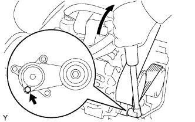
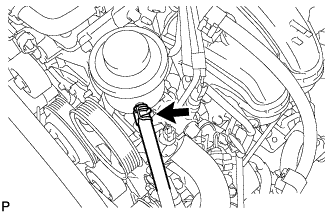
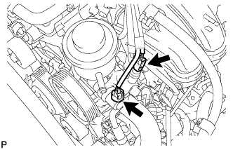
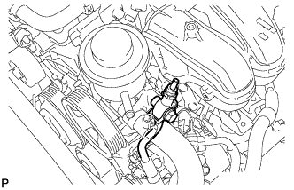
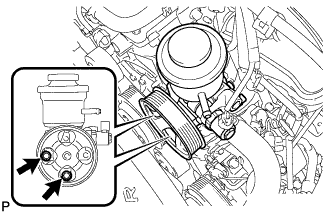

ЛОПАСТНОЙ НАСОС (для моделей с 2TR-FE) > СНЯТИЕ |
| 1. ОТСОЕДИНИТЕ ПРОВОД ОТ ОТРИЦАТЕЛЬНОГО ВЫВОДА АККУМУЛЯТОРНОЙ БАТАРЕИ |
| 2. СНИМИТЕ ПОЛИКЛИНОВОЙ РЕМЕНЬ ВЕНТИЛЯТОРА И ГЕНЕРАТОРА |
|  |
С помощью шестигранника, указанного на рисунке стрелкой, сдвиньте шкив натяжителя вниз, уменьшив тем самым натяжение поликлинового ремня. Затем снимите поликлиновой ремень.
| 3. ОТСОЕДИНИТЕ ВОЗВРАТНЫЙ ШЛАНГ |
|  |
Снимите фиксатор и отсоедините шланг.
| 4. ОТСОЕДИНИТЕ НАГНЕТАТЕЛЬНЫЙ ПАТРУБОК В СБОРЕ |
|  |
Отсоедините 2 разъема.
|  |
Выверните соединительный болт-штуцер и отсоедините нагнетательный патрубок от лопастного насоса.
Снимите прокладку с нагнетательного патрубка.
| 5. СНИМИТЕ ЛОПАСТНОЙ НАСОС В СБОРЕ |
|  |
Выверните 2 болта и снимите лопастной насос.